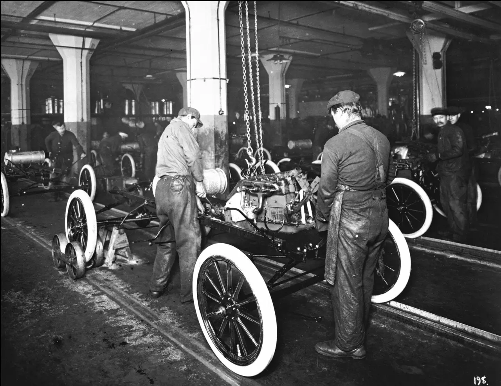

1913 — Apparition de la première ligne d’assemblage
Mise en oeuvre par Henry Ford, la première ligne d'assemblageest introduite en 1913 avec le modèle Ford T, cette méthoderévolutionnaire permet de réduire le temps de fabrication de laFord T de 12 heures à 1 heures et 30 minutes augmentant demanière significative la production. Cette innovation est encoreutilisée partout dans le monde par les grands fabricatantsautomobiles.